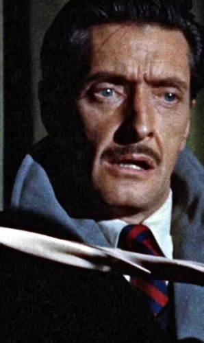
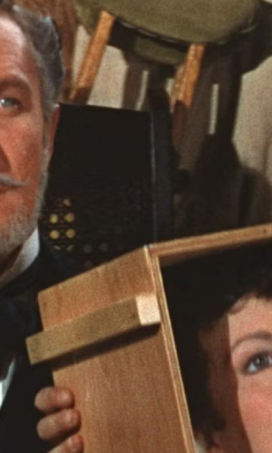
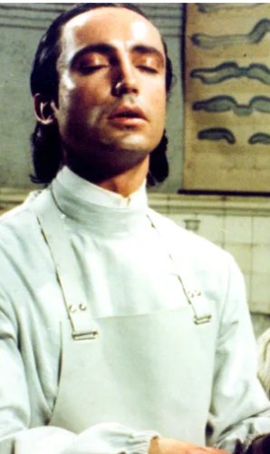
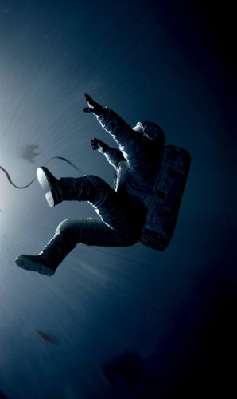
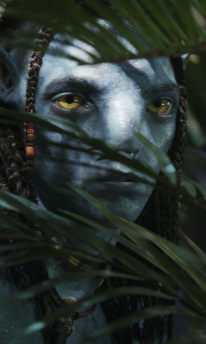
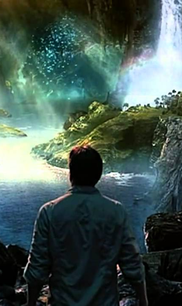
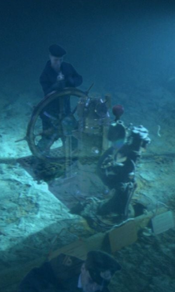

VIRTUAL CINE
Clássicos
<
3D

Dial M For Murder (1954)
Dial M for Murder é um filme de suspense policial americano de 1954 dirigido por Alfred Hitchcock.
3D

House of Wax (1953)
House of Wax é um filme de terror de 1953, dirigido por Andre DeToth
3D
Creature From the Black Lagoon (1954)
É um filme de terror 3D em preto e branco americano de 1954 produzido por William Alland.
3D

Flesh for Frankenstein (1973)
Flesh for Frankenstein é um filme de terror de 1973 escrito e dirigido por Paul Morrissey.
>
3D
Magnificent Bodyguards (1978)
Magnificent Bodyguards é um filme de ação de artes marciais de Hong Kong,estrelado por Jackie Chan e dirigido por Lo Wei.
Destaques
<
3D

Gravity(2013)
Gravity é um filme de suspense de ficção científica de 2013 dirigido por Alfonso Cuarón, que também co-escreveu, co-editou e produziu o filme.
3D

Avatar (2009)
Avatar é um filme épico de ficção científica estadunidense de 2009, escrito e dirigido por James Cameron
3D

Center of the Earth (2008)
Em uma missão para descobrir o que aconteceu com seu irmão desaparecido, um cientista, seu sobrinho e seu guia de montanha descobrem um fantástico
3D

Ghosts Of The Abyss (2003)
É um documentário lançado pela Walt Disney Pictures e Walden Media. Foi dirigido pelo diretor vencedor do Óscar James Cameron
>
3D
The Walk (2015)
The Walk é um filme biográfico de ação e drama em 3D de 2015.